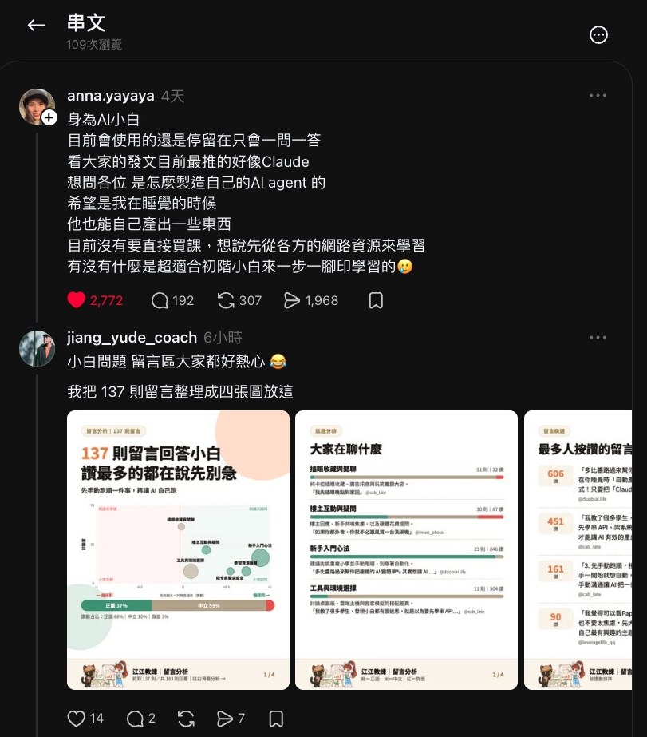
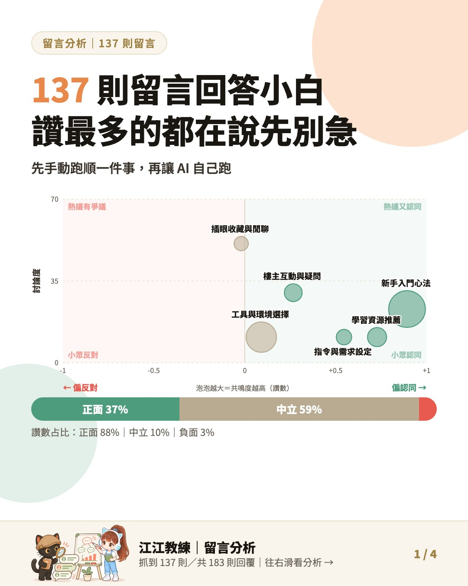
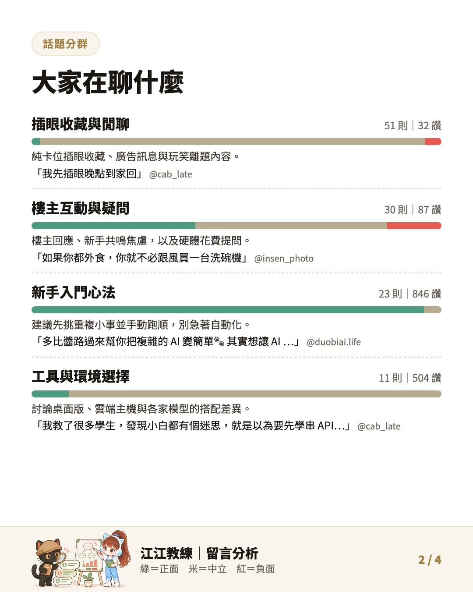
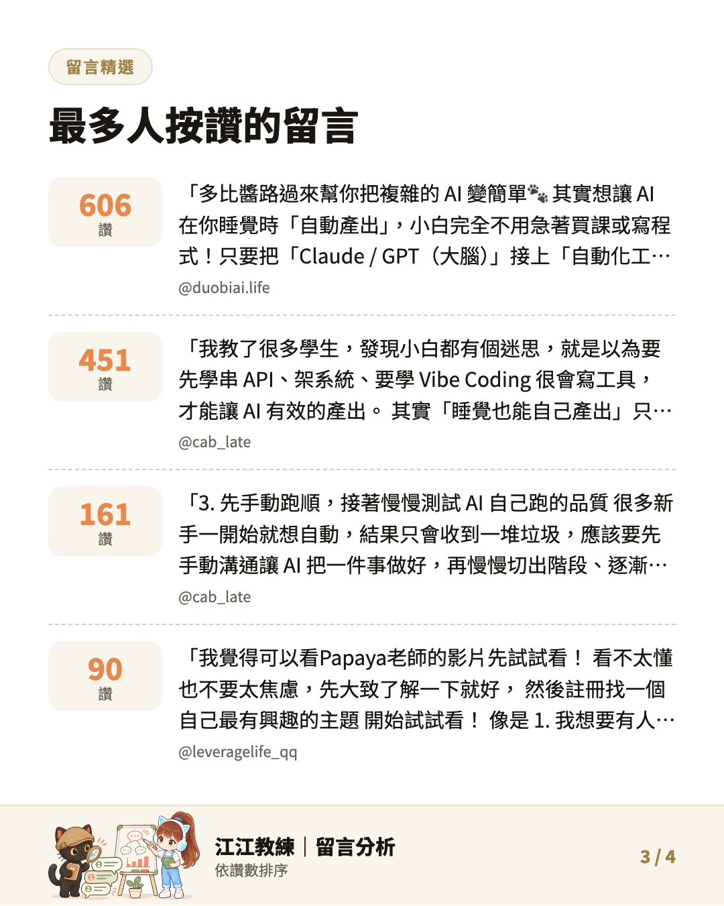
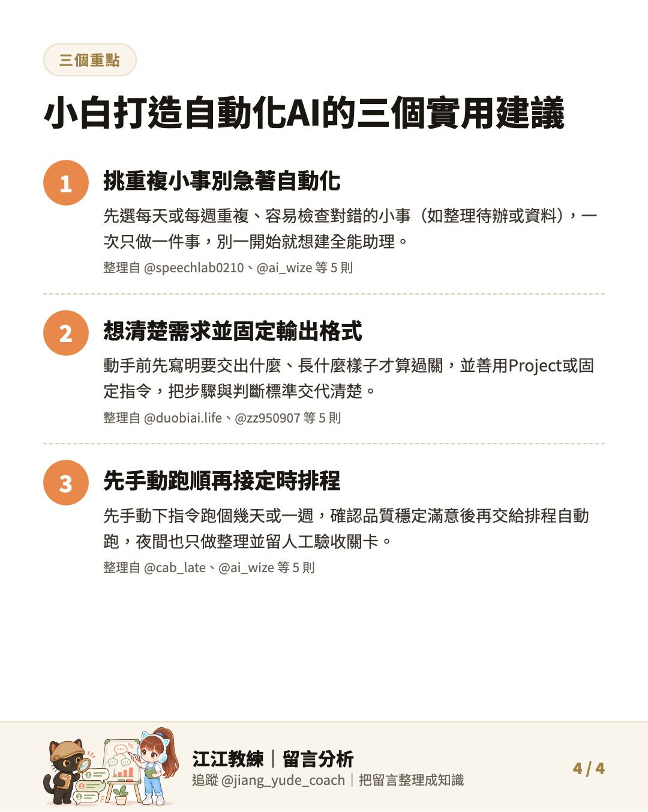
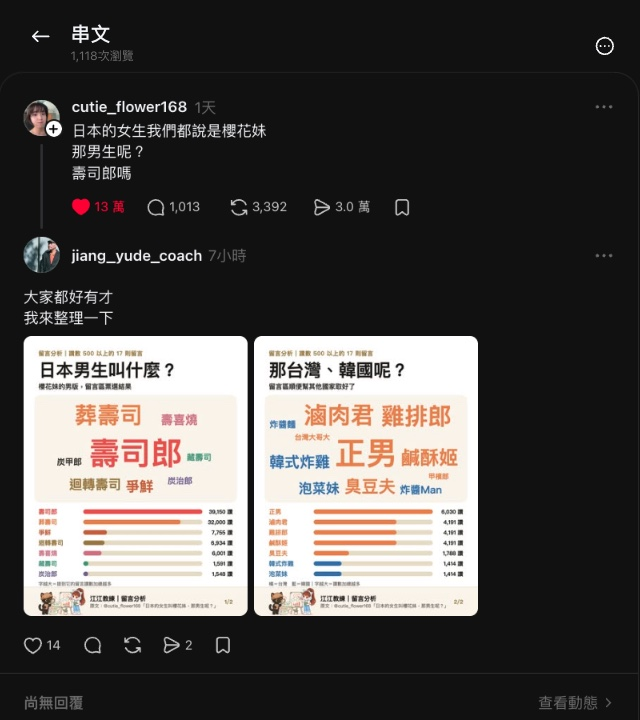
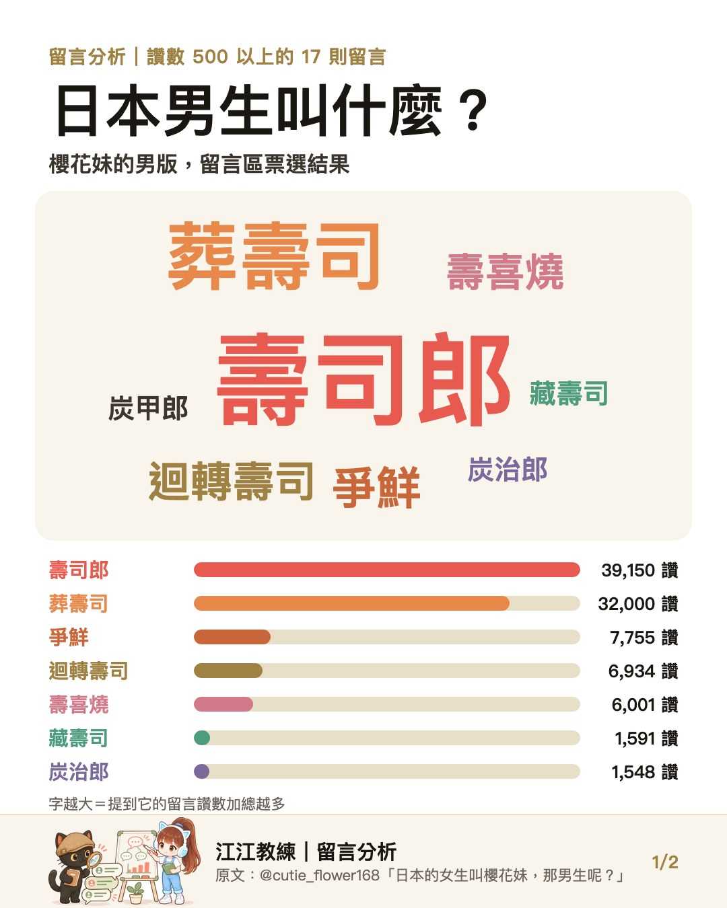
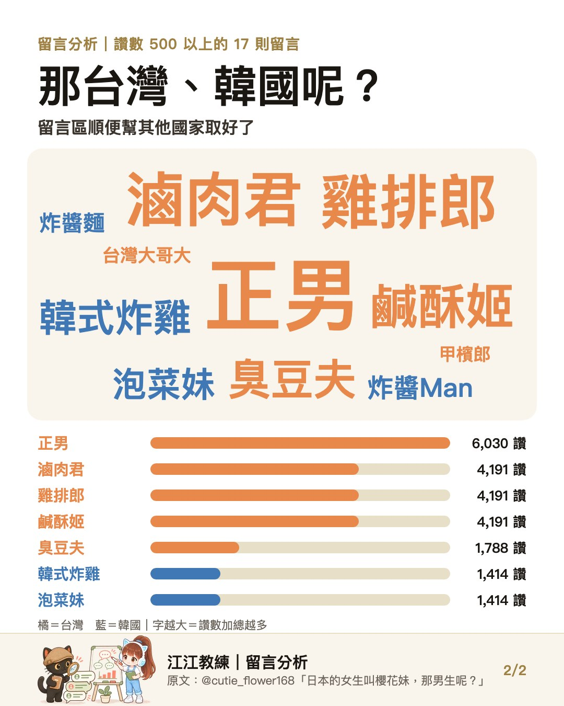

我實際做過的範例
「我當然說剛剛開始還抓不準，但是我記得我幾篇還不錯的」，照時間順序是這三篇。小圖點開可以放大、左右滑。
第一篇：網站被攻擊、又要去警局的血淚教訓
有人分享自己架的網站被攻擊、又要去警局的經過（原文 ），底下一堆工程師在嘲笑，但也有幾個人給了建議。
我謝謝原作者和留言區，照大家的建議自己再查證、研究，整理成資安檢查表發成 Threads 貼文 ，詳細內容寫成官網文章。這篇有效果之後，我才開始幫熱門貼文做留言分析。
🔍 圖片區：點任一張可放大，左右滑看全部
原貼文公開畫面（截圖時間 2026-11-22 03:23）
第二篇：身為 AI 小白，要怎麼做出自己的 AI Agent？
看過資安那篇大家整理的檢查表之後，我懂了：可以幫大家整理留言的重點。
這篇是一位 AI 小白發問（原文 ）：目前只會一問一答，想知道怎麼做出自己的 AI Agent，讓它在自己睡覺的時候也能產出東西，有沒有適合初學者一步一步學的資源。
底下 183 則回覆，我請 AI 整理了其中 137 則，做成四張「留言分析」圖卡：大家站哪一邊、在聊什麼、哪幾則最多讚、三個重點，留在原作者的貼文底下 。讚最多的留言都在說先別急：先手動跑順一件事，再讓 AI 自己跑。
我的留言只寫：「小白問題 留言區大家都好熱心 😂／我把 137 則留言整理成四張圖放這」。這篇也比較適合小白，版主還回應謝謝我。到 11 月 26 日晚上，這則留言有 729 次瀏覽、8 個讚、1 次分享。
🔍 圖片區：點任一張可放大，左右滑看全部

原文和我留在底下的留言（2026-11-27 截圖）

1 輿情分布 
2 大家在聊什麼 
3 最多讚的留言 
4 三個重點
第三篇：日本的女生叫櫻花妹，那男生呢？
這篇是大家在留言區接龍取名（原文 ），底下 847 則回覆。這種好笑的貼文，我改用兩張詞雲：AI 抓下 326 則留言，只取讚數 500 以上的 17 則，字越大代表提到它的留言讚數加總越多。
我的留言只寫兩行：「大家都好有才／我來整理一下」，再附兩張詞雲（我的留言 ）。這篇效果也不錯，看的人覺得很厲害。到 11 月 26 日晚上，這則留言有 665 次瀏覽、9 個讚、2 次分享。
🔍 圖片區：點任一張可放大，左右滑看全部

原文和我留在底下的留言（2026-11-27 截圖）

1 日本男生叫什麼 
2 延伸到台灣與韓國
這件事的重點是「在蹭的過程讓人家知道你是很厲害的專業」。我留分析表，是讓人看到我的分析能力；你的專業是什麼，就讓人看到那個專業。